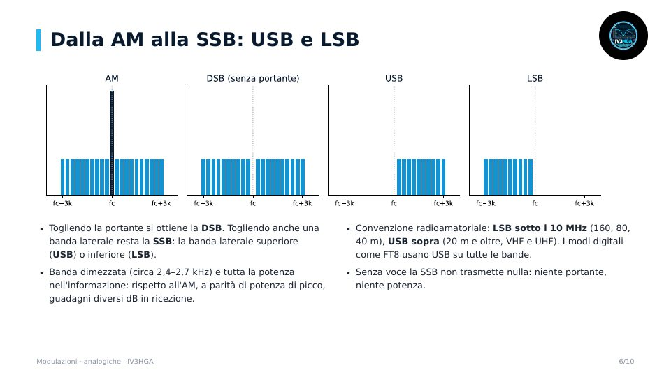
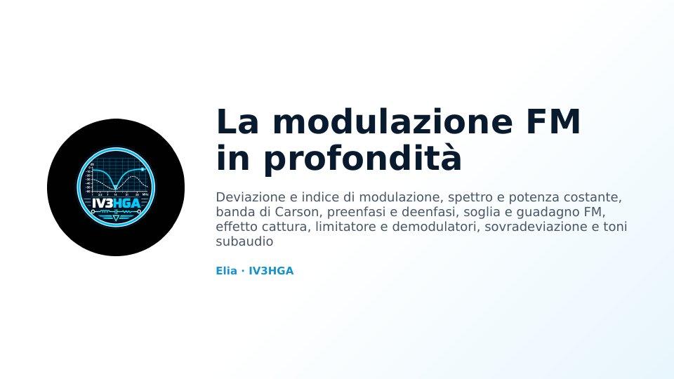
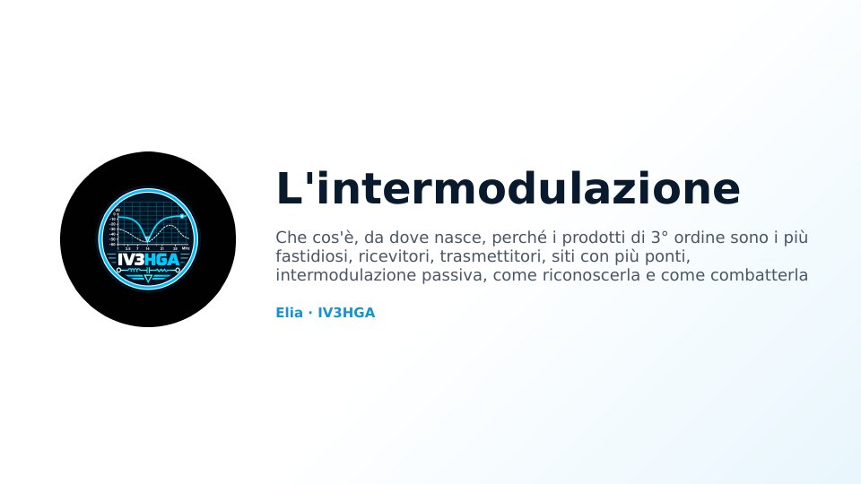
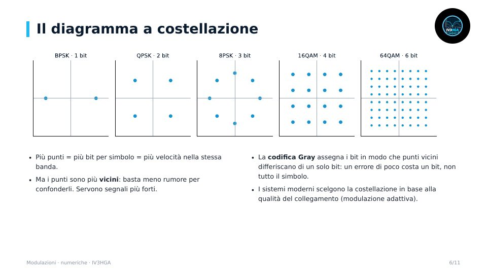
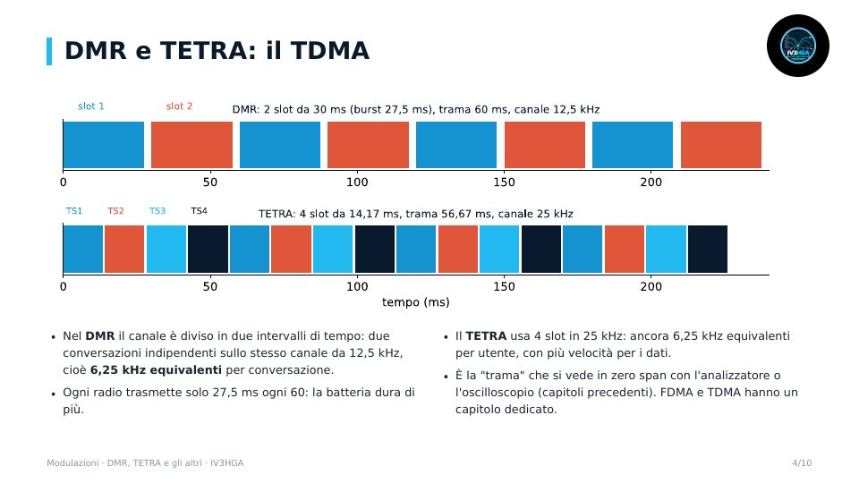

Capitolo 8 · Modulo 1
Le modulazioni analogiche
- Che cos'è una modulazione: ampiezza, frequenza, fase
- CW e i key click
- AM, DSB e SSB: USB e LSB, generazione e ricezione
- FM e modulazione di fase; confronto
Dalle basi ai sistemi: CW, AM, SSB (USB e LSB), FM e PM; la FM in profondità e l'intermodulazione; modulazioni numeriche, costellazioni e diagramma ad occhio; DMR, TETRA e gli altri.




